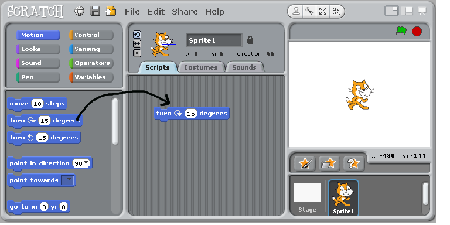
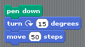

Crash course in programming, with Scratch
by christophe@pallier.org
Prequisite
Ideally, you should have ran the tutorial "Getting Started with Scratch". on scratch.mit.edu (to be found under the 'Create'tab).
First steps
Program 001
In the 'motion' group, take the instruction 'turn 15 degrees' and drag it onto the 'Scripts' panel.

Double-Click repeatedly on the block 'turn 15 degrees', you should see the cat ('sprite 1') rotate.
In Scratch, when one double-clicks an instruction in the 'Scripts' panel, the computer executes it.
Program 002
Drag the instruction 'move 10 steps' from the motion group, and add it to the bottom of the instruction 'turn 15 degrees'. Change the value '10' into '50'.
You have just created a block of instructions, also known as a script.
- Double-Click on the block and see the sprite moving.
- Note that inside a block, instructions are exectuted sequentially, one after the other. Can you prove it?
- Experiment with changing the argument of the instruction 'move' (Tip: to clear the drawing area, move the instruction 'pen/clear' to the script window and execute it)
Program 003
Click on the 'pen' group, and add 'pen down' at the top of the block.

Run it.
Program 004
Construct the following scripts and play with them until you are sure to understand the behavior of the computer..
Concepts learned so far
- Instruction
- Argument of an instruction
- Block of instructions and sequential execution
Loops
Computers are good at doing tasks repeatedly (as they do not get tired).
Click on the "Control" group, and try to construct the following script:
- Clicking on the 'green' flag will execute the block of instructions
- The 'Repeat' instruction, execute the inner block of instruction a number of times specified as an argument. This is called a loop
- Adjust the parameter of the Repeat instruction so that the sprite draw a full circle when you click once on the green flag.
- Replace the repeat instruction by 'forever'.
Repeat a block until
Modify the script as follows:
Tip: the condition 'key space pressed?' is in the 'Sensing' group.
This illustrates a repeat..until loop: the inner block is executed until the condition is satisfied.
Two sprites
Add a new sprite, and duplicate the script from sprite1. Click on the green flag. You should see the two sprites running in circles.
Prove that the scripts associated to the two sprites run in parallel (rather than sequentially).
Conditional execution
Create a new scratch project, and change the costume of the sprite into a ball.
Then write and execute the following script.
You should see the ball bounce on the edges.
Variables
Using the group 'variable', we are going to create a variable 'a' and make it display continuously the x-coordinate of the ball.
The concept of variable is very important. You can think of it as a name for a object that can change (here the object is a number).
Now study the following script:
The loop is executed 100 times. Each time, the value of the variable a is incremented by 1, and is used to compute new x and y coordinates where to sprite is instructed to moved to.
/* slidy.css
Copyright (c) 2005-2010 W3C (MIT, ERCIM, Keio), All Rights Reserved. W3C liability, trademark, document use and software licensing rules apply, see:
http://www.w3.org/Consortium/Legal/copyright-documents http://www.w3.org/Consortium/Legal/copyright-software */ body { margin: 0 0 0 0; padding: 0 0 0 0; width: 100%; height: 100%; color: black; background-color: white; font-family: "Gill Sans MT", "Gill Sans", GillSans, sans-serif; font-size: 14pt; }
div.toolbar { position: fixed; z-index: 200; top: auto; bottom: 0; left: 0; right: 0; height: 1.2em; text-align: right; padding-left: 1em; padding-right: 1em; font-size: 60%; color: red; background-color: rgb(240,240,240); border-top: solid 1px rgb(180,180,180); }
div.toolbar span.copyright { color: black; margin-left: 0.5em; }
div.initial_prompt { position: absolute; z-index: 1000; bottom: 1.2em; width: 100%; background-color: rgb(200,200,200); opacity: 0.35; background-color: rgb(200,200,200, 0.35); cursor: pointer; }
div.initial_prompt p.help { text-align: center; }
div.initial_prompt p.close { text-align: right; font-style: italic; }
div.slidy_toc { position: absolute; z-index: 300; width: 60%; max-width: 30em; height: 30em; overflow: auto; top: auto; right: auto; left: 4em; bottom: 4em; padding: 1em; background: rgb(240,240,240); border-style: solid; border-width: 2px; font-size: 60%; }
div.slidy_toc .toc_heading { text-align: center; width: 100%; margin: 0; margin-bottom: 1em; border-bottom-style: solid; border-bottom-color: rgb(180,180,180); border-bottom-width: 1px; }
div.slide { z-index: 20; margin: 0 0 0 0; padding-top: 0; padding-bottom: 0; padding-left: 20px; padding-right: 20px; border-width: 0; clear: both; top: 0; bottom: 0; left: 0; right: 0; line-height: 120%; background-color: transparent; }
div.background { display: none; }
div.handout { margin-left: 20px; margin-right: 20px; }
div.slide.titlepage { text-align: center; }
div.slide.titlepage h1 { padding-top: 10%; margin-right: 0; }
div.slide h1 { padding-left: 0; padding-right: 20pt; padding-top: 4pt; padding-bottom: 4pt; margin-top: 0; margin-left: 0; margin-right: 60pt; margin-bottom: 0.5em; display: block; font-size: 160%; line-height: 1.2em; background: transparent; }
div.toc { position: absolute; top: auto; bottom: 4em; left: 4em; right: auto; width: 60%; max-width: 30em; height: 30em; border: solid thin black; padding: 1em; background: rgb(240,240,240); color: black; z-index: 300; overflow: auto; display: block; visibility: visible; }
div.toc-heading { width: 100%; border-bottom: solid 1px rgb(180,180,180); margin-bottom: 1em; text-align: center; }
img { image-rendering: optimize-quality; }
pre { font-size: 80%; font-weight: bold; line-height: 120%; padding-top: 0.2em; padding-bottom: 0.2em; padding-left: 1em; padding-right: 1em; border-style: solid; border-left-width: 1em; border-top-width: thin; border-right-width: thin; border-bottom-width: thin; border-color: #95ABD0; color: #00428C; background-color: #E4E5E7; }
li pre { margin-left: 0; }
blockquote { font-style: italic }
img { background-color: transparent }
p.copyright { font-size: smaller }
.center { text-align: center } .footnote { font-size: smaller; margin-left: 2em; }
a img { border-width: 0; border-style: none }
a:visited { color: navy } a:link { color: navy } a:hover { color: red; text-decoration: underline } a:active { color: red; text-decoration: underline }
a {text-decoration: none} .navbar a:link {color: white} .navbar a:visited {color: yellow} .navbar a:active {color: red} .navbar a:hover {color: red}
ul { list-style-type: square; } ul ul { list-style-type: disc; } ul ul ul { list-style-type: circle; } ul ul ul ul { list-style-type: disc; } li { margin-left: 0.5em; margin-top: 0.5em; } li li { font-size: 85%; font-style: italic } li li li { font-size: 85%; font-style: normal }
div dt { margin-left: 0; margin-top: 1em; margin-bottom: 0.5em; font-weight: bold; } div dd { margin-left: 2em; margin-bottom: 0.5em; }
p,pre,ul,ol,blockquote,h2,h3,h4,h5,h6,dl,table { margin-left: 1em; margin-right: 1em; }
p.subhead { font-weight: bold; margin-top: 2em; }
.smaller { font-size: smaller } .bigger { font-size: 130% }
td,th { padding: 0.2em }
ul { margin: 0.5em 1.5em 0.5em 1.5em; padding: 0; }
ol { margin: 0.5em 1.5em 0.5em 1.5em; padding: 0; }
ul { list-style-type: square; } ul ul { list-style-type: disc; } ul ul ul { list-style-type: circle; } ul ul ul ul { list-style-type: disc; }
ul li { list-style: square; margin: 0.1em 0em 0.6em 0; padding: 0 0 0 0; line-height: 140%; }
ol li { margin: 0.1em 0em 0.6em 1.5em; padding: 0 0 0 0px; line-height: 140%; list-style-type: decimal; }
li ul li { font-size: 85%; font-style: italic; list-style-type: disc; background: transparent; padding: 0 0 0 0; } li li ul li { font-size: 85%; font-style: normal; list-style-type: circle; background: transparent; padding: 0 0 0 0; } li li li ul li { list-style-type: disc; background: transparent; padding: 0 0 0 0; }
li ol li { list-style-type: decimal; }
li li ol li { list-style-type: decimal; }
/ setting class="outline on ol or ul makes it behave as an ouline list where blocklevel content in li elements is hidden by default and can be expanded or collapsed with mouse click. Set class="expand" on li to override default /
ol.outline li:hover { cursor: pointer } ol.outline li.nofold:hover { cursor: default }
ul.outline li:hover { cursor: pointer } ul.outline li.nofold:hover { cursor: default }
ol.outline { list-style:decimal; } ol.outline ol { list-style-type:lower-alpha }
ol.outline li.nofold { padding: 0 0 0 20px; background: transparent url(../graphics/nofold-dim.gif) no-repeat 0px 0.5em; } ol.outline li.unfolded { padding: 0 0 0 20px; background: transparent url(../graphics/fold-dim.gif) no-repeat 0px 0.5em; } ol.outline li.folded { padding: 0 0 0 20px; background: transparent url(../graphics/unfold-dim.gif) no-repeat 0px 0.5em; } ol.outline li.unfolded:hover { padding: 0 0 0 20px; background: transparent url(../graphics/fold.gif) no-repeat 0px 0.5em; } ol.outline li.folded:hover { padding: 0 0 0 20px; background: transparent url(../graphics/unfold.gif) no-repeat 0px 0.5em; }
ul.outline li.nofold { padding: 0 0 0 20px; background: transparent url(../graphics/nofold-dim.gif) no-repeat 0px 0.5em; } ul.outline li.unfolded { padding: 0 0 0 20px; background: transparent url(../graphics/fold-dim.gif) no-repeat 0px 0.5em; } ul.outline li.folded { padding: 0 0 0 20px; background: transparent url(../graphics/unfold-dim.gif) no-repeat 0px 0.5em; } ul.outline li.unfolded:hover { padding: 0 0 0 20px; background: transparent url(../graphics/fold.gif) no-repeat 0px 0.5em; } ul.outline li.folded:hover { padding: 0 0 0 20px; background: transparent url(../graphics/unfold.gif) no-repeat 0px 0.5em; }
/* for slides with class "title" in table of contents */ a.titleslide { font-weight: bold; font-style: italic }
/ hide images for work around for save as bug where browsers fail to save images used by CSS / img.hidden { display: none; visibility: hidden } div.initial_prompt { display: none; visibility: hidden }
div.slide { visibility: visible; position: inherit; } div.handout { border-top-style: solid; border-top-width: thin; border-top-color: black; }
@media screen { .hidden { display: none; visibility: visible }
div.slide.hidden { display: block; visibility: visible } div.handout.hidden { display: block; visibility: visible } div.background { display: none; visibility: hidden } body.single_slide div.initial_prompt { display: block; visibility: visible } body.single_slide div.background { display: block; visibility: visible } body.single_slide div.background.hidden { display: none; visibility: hidden } body.single_slide .invisible { visibility: hidden } body.single_slide .hidden { display: none; visibility: hidden } body.single_slide div.slide { position: absolute } body.single_slide div.handout { display: none; visibility: hidden } }
@media print { .hidden { display: block; visibility: visible }
div.slide pre { font-size: 60%; padding-left: 0.5em; } div.toolbar { display: none; visibility: hidden; } div.slidy_toc { display: none; visibility: hidden; } div.background { display: none; visibility: hidden; } div.slide { page-break-before: always } /* :first-child isn't reliable for print media */ div.slide.first-slide { page-break-before: avoid } }